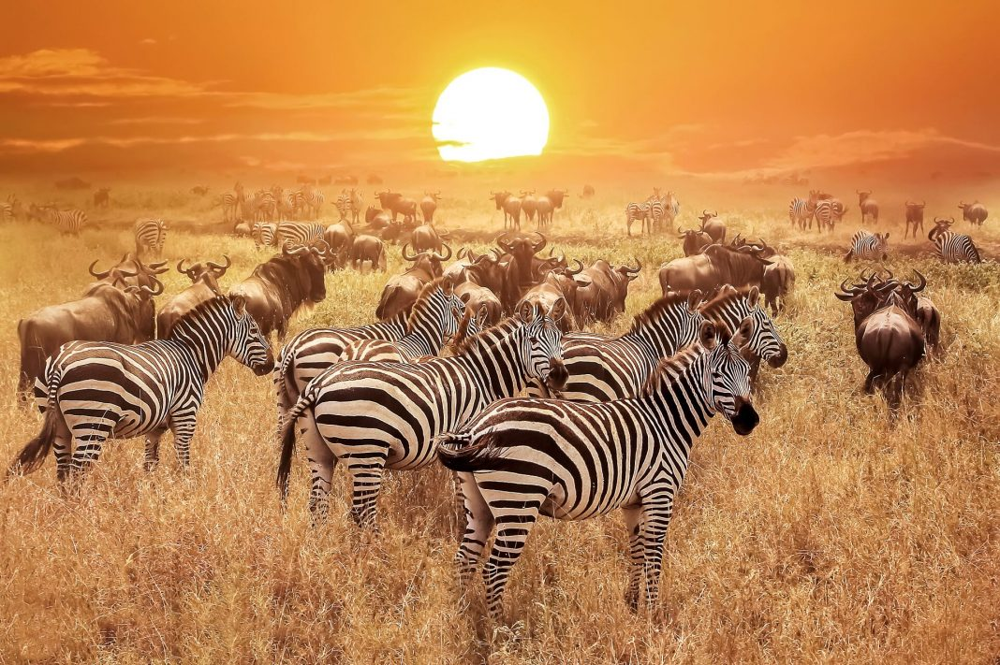

#Do you want to see the wonders of nature?
The Serengeti scheme may be a nation-state in Africa, spanning northern Tanzania. The protected space at intervals the region includes around thirty,000 km2 of land, together with the Serengeti parkland and several other game reserves. The Serengeti hosts the second citation required the largest terrestrial craniate migration within the world, that helps secure it united of the Seven Natural Wonders of Africa, and united of the 10 natural travel wonders of the planet. The Serengeti is additionally famous for its massive lion population and is one in all the most effective places to look at prides in their natural surroundings. Around seventy massive craniate and five hundred bird species ar found there. This high diversity may be an operate of numerous habitats, together with riverine forests, swamps, kopjes, grasslands, and woodlands. Blue antelope, gazelles, zebras, and buffalos ar a number of the usually found massive mammals within the region.The Serengeti has a number of East Africa's finest game areas. Besides being best-known for the nice migration, the Serengeti is additionally known for its voluminous massive predators. The system is home to over three,000 Lions, 1,000 African leopards, and 7,700 to 8,700 noticed hyenas. The geographic region chetah are gift in Serengeti. African wild dogs square measure comparatively scarce in a lot of the Serengeti. This is often notably true in places like Serengeti parkland (where they became extinct in 1992), within which lions and noticed hyenas, predators that steal canid kills and square measure an on the spot explanation for canid mortality, square measure voluminous.

Each year round the same time, the circular nice gnu migration begins within the Ngorongoro Conservation space of the southern Serengeti in African country and loops clockwise through the Serengeti parkland and north towards the Nilotic Mara reserve in African country. This migration is of course caused, by the supply of grazing. The initial part lasts from regarding Gregorian calendar month to March, once the birth season begins – a time once there's many rain-ripened grass offered for the 260,000 zebras that precede one.7 million gnu and also the following many thousands of different plains game, as well as around 470,000 gazelles.During Feb, the gnu area unit on the short grass plains of the southeast a part of the scheme, grazing and biological process to just about five hundred,000 calves in two to three weeks. Few calves area unit born earlier than time and of those, hardly any survive, for the most part as a result of terribly young calves area unit additional noticeable to predators once mixed with older calves from the previous year. because the rains finish in could, the animals begin moving northwest into the areas round the Grumeti stream, wherever they usually stay till late June. The crossings of the Grumeti and Mara rivers starting in July area unit a preferred campaign attraction as a result of crocodiles area unit lying in wait. The herds arrive in African country in late July / August, wherever they keep for the remainder of the season, except that the Thomson's and Grant's gazelles move solely east/west. In early Nov, with the beginning of the short rains, the migration starts moving south once more, to the short grass plains of the southeast, sometimes inbound in December in many time for birth in Feb. About 250,000 gnu die throughout the journey from African country to the Maasai Mara National Reserve in southwestern African country, a complete of 800 kilometres (500 mi). Death is sometimes from thirst, hunger, exhaustion, or predation as well as by huge cats.